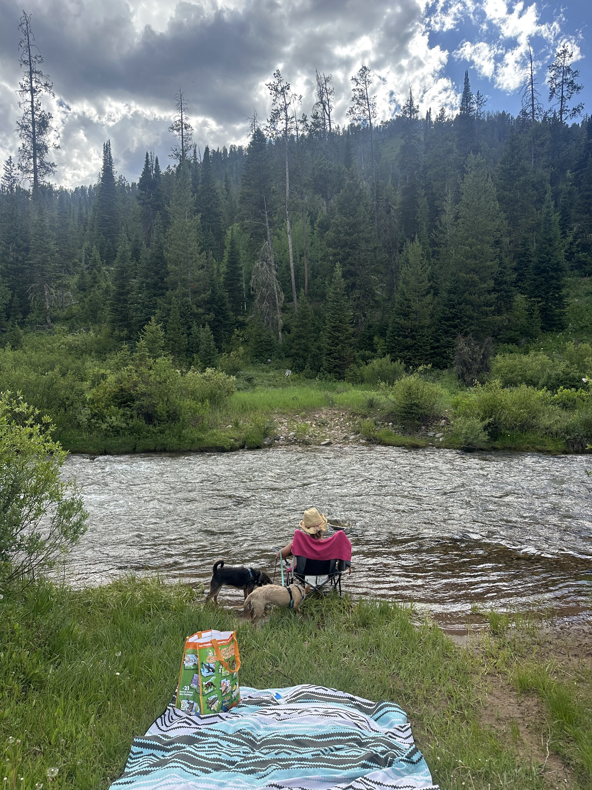
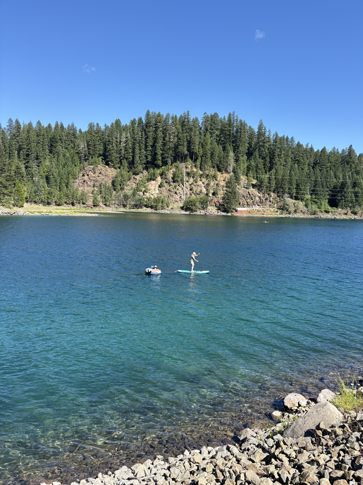
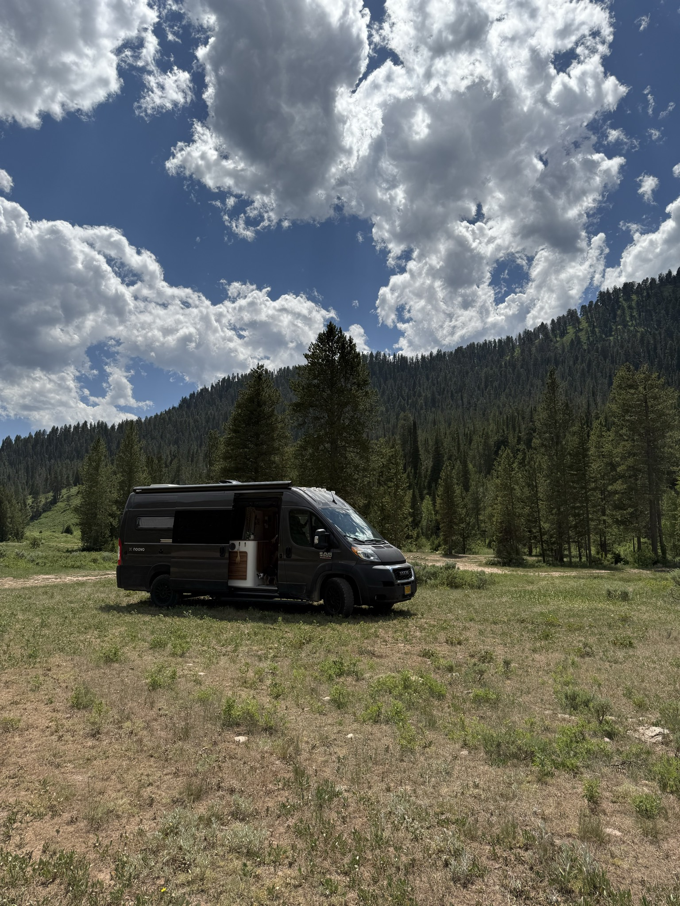

This is the kind of quiet Adventure Together goes looking for.
Some of our favorite Circles on Grover didn't start on Grover at all.
Adventure Together is a women-focused van life community built over years by people who found each other on the road and decided to stay in touch. It's led by Marcy and Amy, two van lifers who also happen to be some of the most active ambassadors for Noovo, the van builder behind the rig they share and a partner we're proud to work with.
They didn't come to Grover as a business deal. They came as van lifers who wanted a better place to keep doing what they were already doing, and their Circle is just getting started: a small, known group of people who already trust each other, with room to grow at their own pace.
"We built this community one campsite and one conversation at a time. Grover is where we're bringing it home."
The Part of Their Story That Built Grover
Marcy and Amy's whole approach to van life is built around finding the quiet places, the little groves worth pulling off for, and keeping them for the people who'd actually respect them. That instinct isn't incidental to Grover. It's part of why we built it this way.
Grover was never meant to be a public map where every dispersed site turns into a parking lot the week after someone posts it. It was built privacy-forward on purpose, so a community like Adventure Together can share the good stuff with each other without broadcasting it to everyone. Circles exist because people like Marcy and Amy already knew this: the best spots survive by staying between the people who found them.
Moving In, Pins and All
Adventure Together now has its own Circle on Grover, a club Circle that sits apart from any single brand and works on a request-and-approve basis, so the community stays exactly as intentional as it's always been.
Marcy has spent years maintaining her own Google Map of Adventure Together's favorite spots. Rather than start from zero, that map is being brought directly into Grover, pin by pin, so years of shared knowledge move with the community instead of staying behind on a tool nobody else can edit.
Marcy and Amy have each already dropped a pin of their own into the Circle, first finds in what's about to become a much bigger shared map.

Marcy's pin: Blue Pool
A paid site near Trail Bridge Campground with easy trailhead access, quiet mornings, and a fire to sit around at night.

Amy's pin: Cliff Creek
A quiet dispersed spot along a creek near Jackson Hole, the kind of find you only hear about from someone who's actually been there.
Noovo built the van that got them there. Adventure Together is where they tell you what to do once you arrive.
A community, not just a download. Adventure Together is planning a webinar, an in-person meetup at Backcountry Overland in Sisters, Oregon, and a presence at the Adventure Van Expo in Tahoe this September, all aimed at getting their people set up on Grover together.
That's the kind of migration we love to see: not a cold start, but an entire community bringing its history with it.
Already One of Us?
If you're already part of Adventure Together, here's how to join them on Grover: download the app, open Circles, search for "Adventure Together," and send a request. Marcy and Amy are approving requests from people they already know from the community, so it may take a beat, but you're in the right place.
Not part of Adventure Together, but inspired to start something like it? You don't need thousands of members to start a Circle, just a handful of people you actually travel with, or want to. It gives your group a shared map, so every good find gets shared instead of stuck in one person's head or one person's screenshots.
Find Your People, or Bring Them With You
Download Grover to request to join Adventure Together if you're already part of that community, or start a Circle of your own with the people you actually travel with.